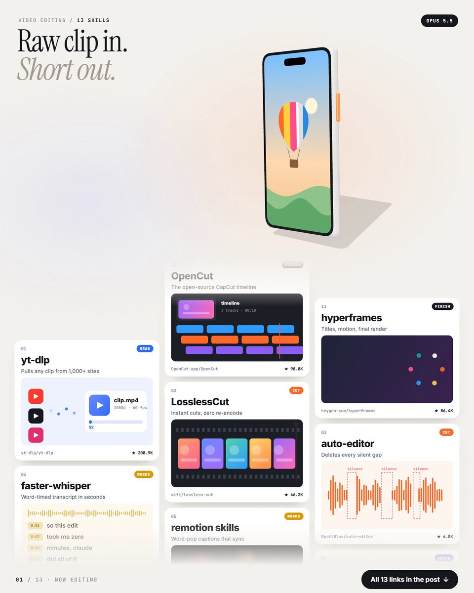

Knowledge hub2 entriesupdated automatically
Everything worth keeping about Claude Opus 5.5.
Guides, prompts, repos and every video from X, archived word for word and kept in one place that grows with each new post.
2entries archived
10videos stored
9images and diagrams
23unique GitHub repos
Entries

Post · 2026-11-18 · @Y0urDumble
Claude Opus 5.5 + 13 free GitHub repos = your own editing desk
A free, open-source CapCut replacement: 13 repos covering grab, cut, transcribe, caption, voice, clean, grade and render.
Video editingOpen sourceCaptionsAudio
Article · 2026-10-27 · @Y0urDumble
How to build a 2.5D motion studio with Opus 5.5 (Full Course)
A 9-part course on the 27M-view 2.5D shorts format: flat 2D characters in lit 3D Blender sets. House rules, story and shot-list prompts, Blender MCP set passes, cut-out rigs, word-timed captions, sound cues and the frame-by-frame review loop, plus a ready SKILL.md.
BlenderMCPRemotionWhisper2.5D animationClaude CodeWatch
13-repo editing deske001
The 27M-view bronze jar shorte002
Part 1 title carde002
Part 3 title carde002
Part 4 title carde002
Part 5 title carde002
Part 6 title carde002
Part 7 title carde002
Claude Opus 5.5 launche002
Blender claymation from one prompte002